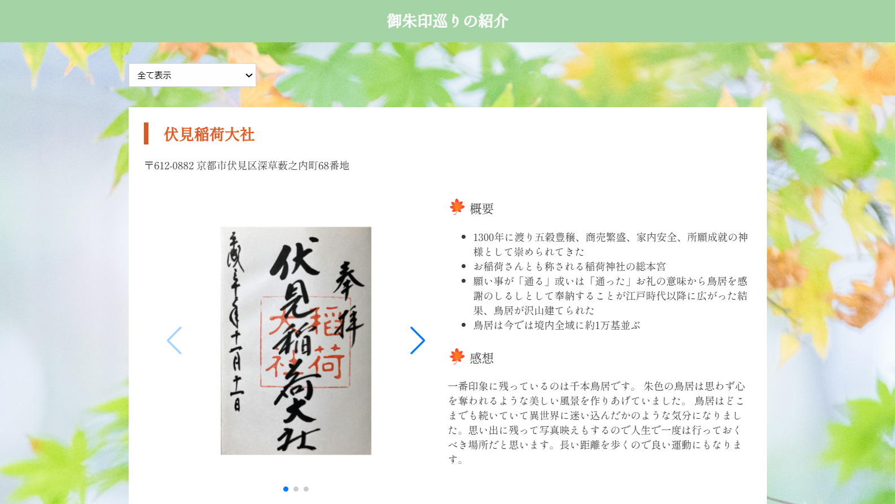

栄養クイズアプリ

使用言語：petite-vue
このアプリではクイズを通して知っておくと役立つ栄養やことわざの知識が身に付けられるようになっています。 さらに、4択のクイズ形式にすることで手軽に楽しく学べて、結果発表ボタンを押すと点数やコメント、解答も表示されるようにして栄養に関する知識が今の段階でどれだけあるのかが分かるようになっています。
天気アプリ

使用言語：petite-vue
生活する中で天気を確認する機会は多く、簡単な操作ですぐに直近の天気を確認できるアプリで、見た目もかわいらしくて親しみやすいものがあるといいと思っていたのでこのアプリを作りました。OpenWeatherMapAPIを使い、3時間ごと5日間の天気を載せています。さらに起動時にその場所の現在の気温や湿度、天気が表示されるようにしました。
ゆるキャラアプリ

使用言語：petite-vue
自分の住んでいる地域や様々な場所のゆるキャラを知ってもらうことでゆるキャラの認知度向上に繋げたいと思いこのアプリを作成しました。 このアプリではグーグルマップ上でクリックすると赤色のマーカーが表示され、その後に確定ボタンを押すことで指定した場所のゆるキャラが表示されるようにしています。
御朱印アプリ
☟クリックするとサイトに移ります☟

使用言語：JavaScript
高校生の頃から神社やお寺に足を運び御朱印を集めています。御朱印は手書きなので一つひとつ違いがある所も魅力の一つで後から見返すと思い出が蘇って懐かしく感じられます。
このように、御朱印巡りは生活に彩りを添えてくれるため良さを伝えたいと思いアプリを作りました。
このアプリでは神社やお寺の場所を選択して絞り込み検索ができ、スライドショーを取り入れることで画像も見やすく表示しています。